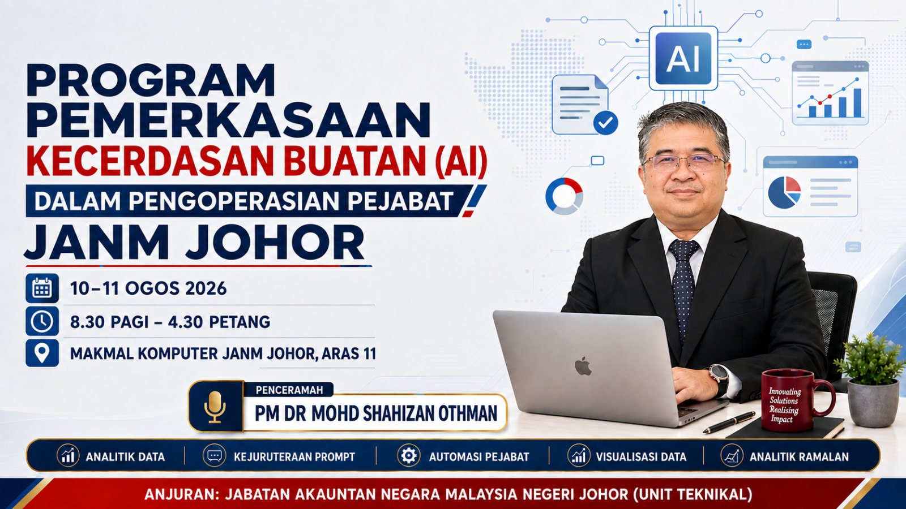
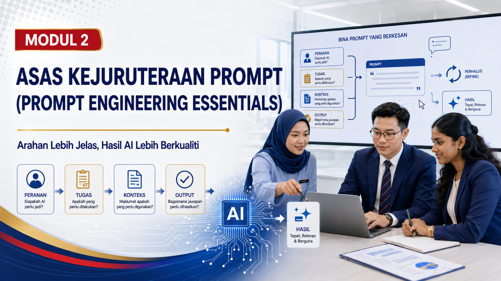
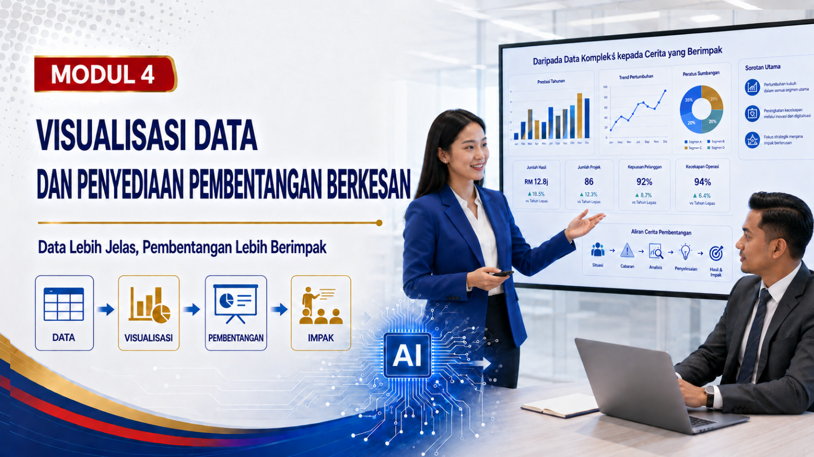
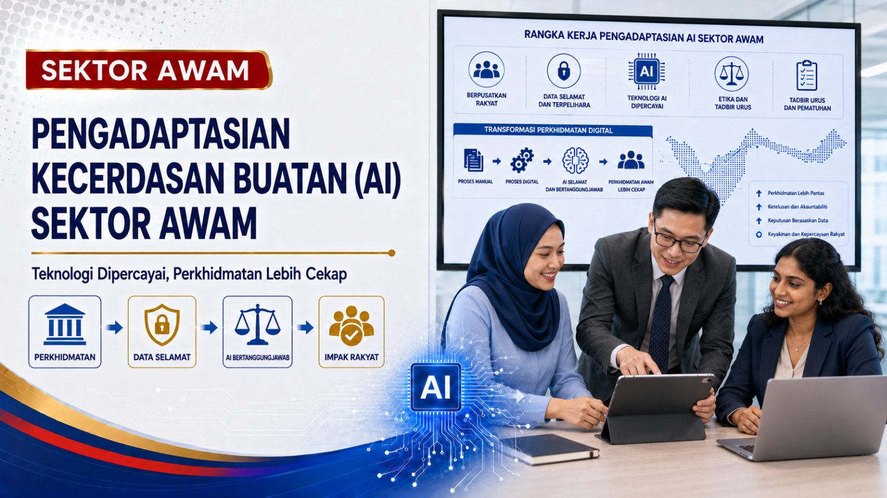

Lebih pantas
Ringkaskan dokumen dan sediakan draf dengan cekap.
Program Pembangunan Kompetensi Digital
Daripada data kepada tindakan. Kuasai Google Gemini, analitik, automasi dan visualisasi untuk membina pejabat yang lebih pintar, cekap dan bertanggungjawab.

✦ 100% Praktikal✓ Semakan manusiaMengapa program ini?
AI bukan sekadar alat menulis. Ia membantu pegawai memahami data, mengurangkan kerja berulang dan menghasilkan pandangan yang lebih bermakna.
Ringkaskan dokumen dan sediakan draf dengan cekap.
Terjemahkan data kepada visual yang mudah difahami.
Kenal pasti trend untuk menyokong perancangan.
Semak fakta, lindungi data dan kekalkan pertimbangan manusia.
Perjalanan pembelajaran
Tentatif program
Pusat bahan kursus
Klik pada muka depan untuk membuka bahan PDF dalam tab baharu.






Pusat Rujukan AI
Kandungan tambahan dipecahkan kepada lima halaman ringkas supaya lebih mudah diterokai.
Pilih alat mengikut hasil yang diperlukan.
Teroka alat →Prompt umum dengan carian, kategori dan fungsi salin.
Cari prompt →Semakan fakta, privasi dan penggunaan bertanggungjawab.
Baca panduan →Templat kerja, glosari dan rujukan praktikal.
Buka sumber →Langkah menggunakan Gemini dan NotebookLM.
Ikuti langkah →